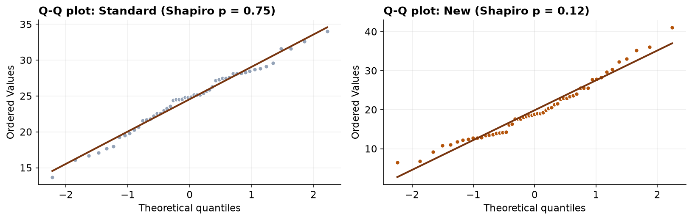
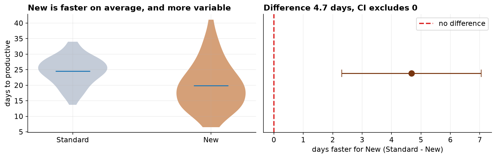

The one-sample test in Capstone 1 compared a mean to a fixed number. The far more common job is comparing two groups to each other: treatment versus control, new versus old, A versus B. That is the two-sample t-test, and this project adds the wrinkle that makes it interesting in practice, the groups do not have to be equally spread out, and checking whether they are changes the test you should use.
- Setting
- A company ran a redesigned onboarding program (New) alongside the existing one (Standard) and recorded, for each hire, the number of business days until they cleared the productivity bar.
- The question
- Do new hires reach productivity faster under the redesigned program?
- Why it matters
- HR is deciding whether to roll the redesign out company-wide. Every day saved per hire is real money, and a redesign that changes nothing is worth cancelling.
- What we do
- Compare two independent groups: check the equal-variance assumption, find that it fails, run Welch's t-test, and report the difference in days with its interval alongside what the change in spread means for planning.
New hires on the redesigned program reach productivity about 4.7 days sooner (19.9 vs 24.6 days). Welch's test makes it clear this is not chance, t = 3.92, p < 0.001, with a 95% interval for the gap of [2.3, 7.1] days. There is a catch worth the manager's attention: the new group is far more variable, so it helps most people a lot and a few not at all.
The Question, the Hypotheses, the Design
The company redesigned onboarding and ran the new version (New) alongside the existing one (Standard). For each hire we have the number of business days until they cleared the productivity bar, so lower is better. HR wants to know whether the new program pays off.
| Framework step | This project |
|---|---|
| Goal | Decide whether the mean time-to-productive differs between the New and Standard programs. |
| Hypotheses | H₀: mean (New) = mean (Standard) vs H₁: the means differ, two-sided, α = 0.05. |
| Data type | Continuous outcome (days_to_productive) split by a two-level group (cohort). |
| Design | Two independent groups of different people. Not paired. |
We keep it two-sided: if the redesign had somehow made things worse, the company would want to know that too.
Meet the Groups, Then Clean the File
The export holds 115 rows for 113 hires, and it needs work before it can be trusted. The group labels arrived
inconsistently typed, "New", "new", and "New " with a trailing space, which a
computer treats as three different groups, so the first fix is to standardize the label. Then the
usual three: drop duplicate rows, missing times, and impossible values
(a real time-to-productive falls between 1 and 120 business days, so a 0, a negative, and a 999 placeholder all go).
That leaves 107 clean records, 52 Standard and 55 New.
With the file clean, a first look already tells most of the story, and hints at the twist.

The Standard group averages about 24.6 days (standard deviation 4.4); the New group averages 19.9 days (standard deviation 7.6). So the New program looks roughly five days faster, but its spread is nearly 1.7 times as wide. Whether that speed-up is real, and what to do about the wider spread, is what the rest of the project settles.
Two Assumptions, and the One That Bites
A two-sample t-test asks for two things: each group roughly normal, and the groups with equal variance. We check normality with Shapiro-Wilk and Q-Q plots, and equal variance with Levene's and Bartlett's tests.

| Assumption | Check | Result |
|---|---|---|
| Normality (Standard) | Shapiro-Wilk | p = 0.75, normal |
| Normality (New) | Shapiro-Wilk | p = 0.12, normal |
| Equal variance | Levene's test | p = 0.0018, variances differ |
| Equal variance | Bartlett's test | p = 0.0002, variances differ |
Normality holds, but both variance tests fire: the New group's spread is genuinely larger, not just a quirk of the sample. That single fact rules out the pooled (Student's) t-test, whose formula assumes both groups share one variance. The fix is not to give up on the t-test, it is to switch to Welch's version, which lets the two groups have different variances. The decision looks like this.
Run Welch's Test, Report the Whole Result
Welch's t compares the two means while allowing each group its own variance. The difference is 4.7 days, and relative to how much two group means naturally vary, that is a t of 3.92, well beyond what chance produces.
The confidence interval is the line to quote: we are 95% confident the new program saves somewhere between 2.3 and 7.1 days per hire, and because that range stays above zero, the improvement is real, not noise. The Mann-Whitney U test agrees (p < 0.001), so the conclusion does not lean on the normal assumption either.

Run this way, the pooled test lands in nearly the same place (t = 3.87) as Welch (t = 3.92), because the two groups happen to be close to the same size, and with equal group sizes unequal variance barely moves the result. The moment the groups differ in size, though, ignoring unequal variance can push the p-value the wrong way. Welch costs nothing when variances are equal and protects you when they are not, which is why it is the default to reach for, and here the assumption check makes it the required one.
The Verdict, the Spread, and the Ethics
The new program works: hires clear the productivity bar about five days sooner, an effect that is both statistically clear and, for a hiring pipeline, large enough to matter. But the second headline is the one a quick reading misses. The New group is far more variable. Most hires do much better, yet a handful take as long as the old program or longer. An average of "4.7 days faster" is true and incomplete; the wider spread is a real planning cost and belongs in the recommendation next to the average.
A small p-value (the speed-up is real), a medium-to-large effect size (d ≈ 0.75, worth acting on), a confidence interval that pins the gain at 2 to 7 days, and a variance finding that changes what we recommend. Four numbers, one decision.
And the skeptical last step before acting on it:
- How were hires assigned? The cleanest study assigns people to programs at random. If the New program instead went to one department, one manager, or a later start window, the gap could reflect those people or that period rather than the training. Confirm the groups are comparable on department and start date before crediting the program.
- The spread is part of the finding. Reporting only the faster average would hide that the new program is less predictable, which matters for staffing and scheduling.
- What defines "productive"? The outcome is only as solid as the bar that marks it. If managers apply that bar differently, some of the gap could be measurement rather than genuine speed.
- How far does this go? One pilot at one company supports rolling the program out with monitoring, not a blanket claim that it will help everywhere.
The Two-Sample t-Test in Data Science & AI
Comparing two groups on a numeric outcome is the workhorse of experimentation, and it appears constantly in data and ML work.
| Where it appears | The two groups |
|---|---|
| A/B testing | Control vs variant on a continuous metric (revenue per user, session length). |
| Model comparison | Per-item errors from model A vs model B across a test set (when items are independent). |
| Latency / performance | Response times before vs after a change, measured on separate traffic. |
| Fairness auditing | An outcome or error metric compared across two groups (see Chapter 158). |
Real-world metrics are often skewed and unequally spread, so Welch's t is the sane default for two-group comparisons; some teams never use the pooled version at all. And as in Capstone 1, at experiment scale a tiny, unimportant difference can be "significant," so the effect size and interval, not the p-value alone, decide whether to ship.
Estimate, and Check the Groups Were Comparable
The test said the new program is faster. Planning needs the size of that gain, and crediting the program with it needs one more check first.
| Quantity | Estimate | 95% confidence interval |
|---|---|---|
| Days saved | 4.68 | 2.31 to 7.05 days |
| Cohen's d | 0.75 | 0.36 to 1.22 (bootstrap) |
| SD ratio, New over Standard | 1.71 | 1.31 to 2.24 (bootstrap) |
Somewhere between 2.3 and 7.1 days sooner is a range worth stating, because at the bottom end the change is a nice-to-have and at the top end it is most of a working week per hire. The spread ratio stays clear of 1.0 across its whole interval, which is what licenses the second headline: the new program really is more variable, not just variable in this sample.
The dataset also records each hire's department. If the new cohort had been drawn disproportionately from a fast-ramping part of the business, the difference we measured would be a department effect wearing the program's badge, and no amount of care with the t-test would have caught it. The check comes back clean (chi-square = 3.46, p = 0.33). Note that the logic runs backwards here: a large p-value is the reassuring one, and even so it shows only an absence of detectable imbalance, which is the strongest claim an observational check of this kind can make.
The full project, step by step
The companion notebook runs all twelve framework steps: it loads the raw file, standardizes the messy group
labels, drops the duplicates, blanks, and impossible values with a printed audit trail, checks normality
(Shapiro-Wilk, Q-Q) and equal variance (Levene, Bartlett), runs Welch's t-test with scipy and
confirms the effect size, interval, and power with pingouin, shows the pooled result for contrast,
and cross-checks everything with Mann-Whitney U. Every number here comes from its output.
The dataset (capstone-onboarding-productivity.xlsx) holds the
raw hire log on the hires sheet, with a codebook and notes, and it keeps the inconsistent labels, blanks,
duplicates, and impossible values so you can practice the cleaning. Two written reports accompany it: a
plain-language brief for the HR director (recommendation first, the variance caveat spelled out), and
a technical report, a journal-style write-up for a statistical reader with full methods, the
Welch-versus-pooled reasoning, results tables, and references.
🎓 Key Takeaways
- ✓The two-sample t-test compares the means of two independent groups; here New onboarding beat Standard by 4.7 days.
- ✓Clean beyond the obvious: inconsistent group labels had to be standardized before anything else, then 115 rows became 107.
- ✓Two assumptions, not one: both groups were normal (Shapiro p = 0.75 and 0.12), but Levene and Bartlett showed the variances differ.
- ✓Unequal variance means Welch, not the pooled test: t = 3.92, p < 0.001, 95% CI [2.3, 7.1] days, Cohen's d = 0.75; Mann-Whitney agreed.
- ✓Report the spread, not just the mean: the new program is faster on average but less consistent, which changes the recommendation.
Quiz: Test Yourself
Eight questions on this capstone, from the messy labels to Welch's test. Answer them, hit Check Answers, and keep refining until you score 100%. Your progress is saved.